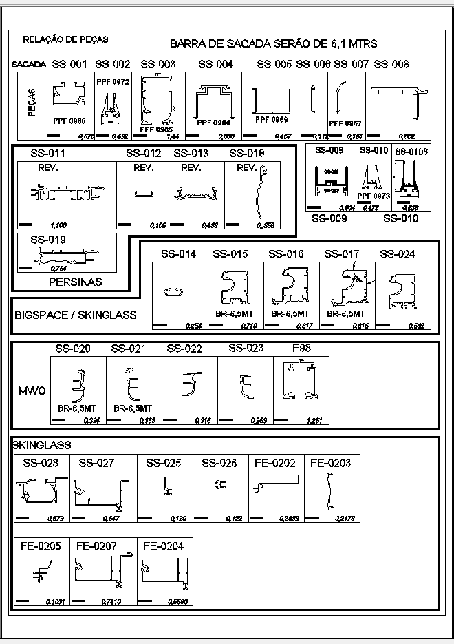
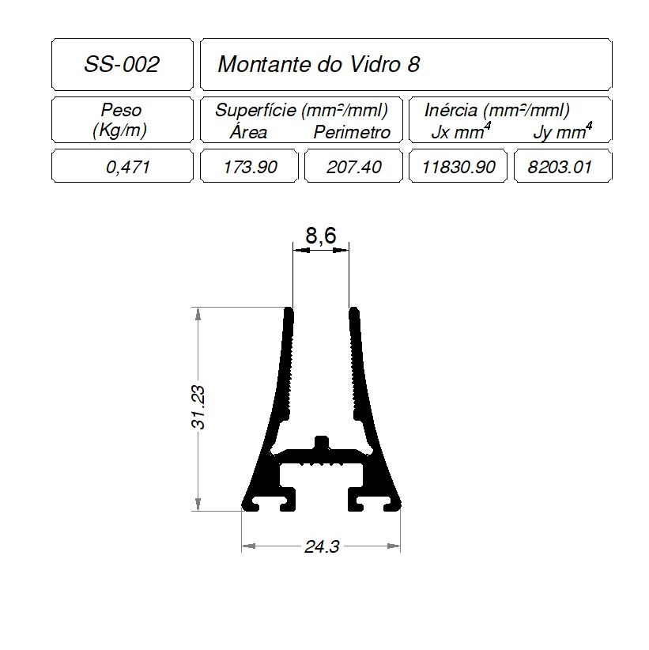
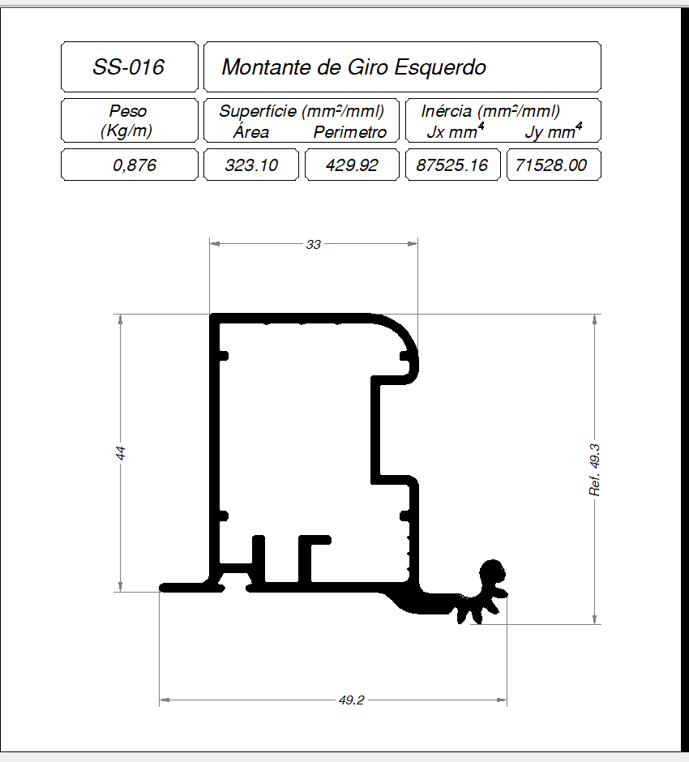
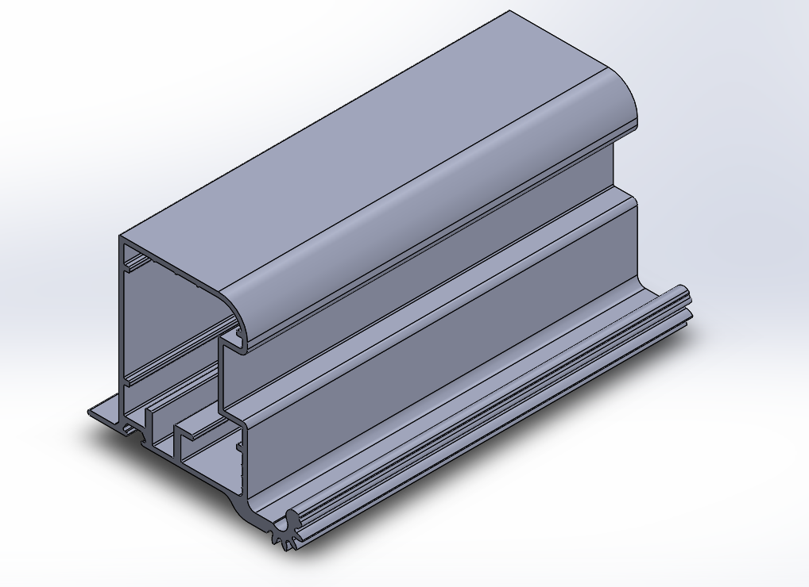

Referência técnica
Mapa geral de perfis
Fonte única de verdade para todos os códigos de perfil (SS-XXX / FE-XXXX) usados nos sistemas do catálogo. Perfis compartilhados entre categorias — como SS-014 a SS-017 e SS-024, usados simultaneamente em portas robustas e pele de vidro — têm ficha única aqui, referenciada a partir de cada produto para evitar duplicação e divergência de dados.
1Relação de peças — desenho mestre
Fonte: Perfis Solução Sacadas_montagem atualizada — AutoCAD
2Índice de compartilhamento entre produtos
| Códigos | Usado em |
|---|---|
| F98, SS-020, SS-021, SS-022, SS-023 | Portas minimalistas (exclusivo) |
| FE-0202, FE-0203, FE-0204, FE-0205, FE-0207, SS-025, SS-026, SS-027, SS-028 | Pele de vidro (exclusivo) |
| LT-077, SS-001, SS-002, SS-003, SS-004, SS-005, SS-006, SS-007, SS-008, SS-009, SS-010, SS-011, SS-012, SS-013 | Sacada (exclusivo) |
| SS-014, SS-015, SS-016, SS-017, SS-024 | Pele de vidro + Portas robustas (compartilhado) |
| SS-019 | Persianas (exclusivo) |
3Fichas técnicas individuais
2 de 34 perfis com ficha completaSS-001
Trilho Inferior

| Peso | 0,683 kg/m |
| Superfície — área | 252,03 mm²/mml |
| Superfície — perímetro | 307,44 mm²/mml |
| Inércia Jx | 23.607,63 mm⁴ |
| Inércia Jy | 62.744,7 mm⁴ |
| Largura de referência | 41,95 mm |
| Altura de referência | 29,6 mm |
SS-016
Montante de Giro Esquerdo

| Peso | 0,876 kg/m |
| Superfície — área | 323,1 mm²/mml |
| Superfície — perímetro | 429,92 mm²/mml |
| Inércia Jx | 87.525,16 mm⁴ |
| Inércia Jy | 71.528 mm⁴ |
| Largura de referência | 49,2 mm |
| Altura de referência | 44 mm |

VISTA ISOMÉTRICA · referência de apresentação
Tabela-resumo (mapa-mestre) antiga registrava 0,817 kg/m para este código; a ficha técnica individual — fonte de verdade — registra 0,876 kg/m. Divergência preservada aqui para revisão futura.
Demais perfis — aguardando ficha técnica individual:
F98
1,261 kg/m
FE-0202
0,2699 kg/m
FE-0203
0,2173 kg/m
FE-0204
0,668 kg/m
FE-0205
0,1091 kg/m
FE-0207
0,741 kg/m
LT-077
Cantoneira 25x25
SS-002
Pf vidro 8mm
0,492 kg/m
SS-003
Trilho superior
1,44 kg/m
SS-004
"U" superior
0,88 kg/m
SS-005
"U" inferior
0,467 kg/m
SS-006
Capa inferior
0,112 kg/m
SS-007
Capa Superior
0,181 kg/m
SS-008
Chapa de correção
0,862 kg/m
SS-009
0,606 kg/m
SS-010
Pf vidro 10mm
0,478 kg/m
SS-011
1,1 kg/m
SS-012
0,106 kg/m
SS-013
0,438 kg/m
SS-014
0,254 kg/m
SS-015
0,71 kg/m · BR-6,5MT
SS-017
0,816 kg/m · BR-6,5MT
SS-019
0,764 kg/m
SS-020
0,394 kg/m
SS-021
0,988 kg/m · BR-6,5MT
SS-022
0,916 kg/m
SS-023
0,269 kg/m
SS-024
0,692 kg/m
SS-025
0,12 kg/m
SS-026
0,122 kg/m
SS-027
0,647 kg/m
SS-028
0,679 kg/m